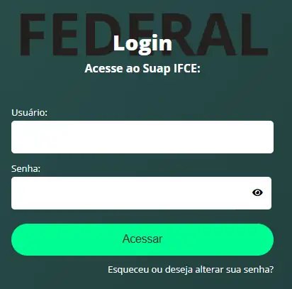
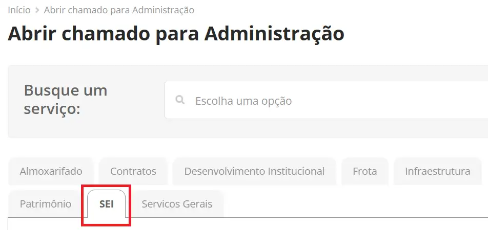
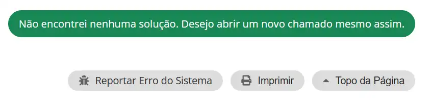
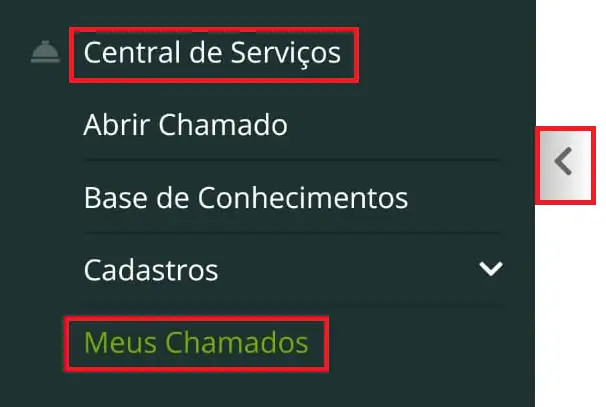

Este é o guia certo para você?
Se não lembrar se já fez o cadastro, use somente o mesmo e-mail pessoal cadastrado no Q-Acadêmico. Outro endereço pode gerar duplicidade e dificultar a liberação do acesso.
Antes de começar
- Tenha CPF, RG, órgão expedidor, endereço completo e telefone.
- Use o mesmo e-mail pessoal informado na ficha de pré-matrícula e cadastrado pela CCA no Q-Acadêmico.
- Não use o e-mail institucional
@aluno.ifce.edu.br. - Confirme que consegue acessar o e-mail escolhido.
- Tenha sua matrícula e acesso ao SUAP, pois a liberação será solicitada por chamado.
O mesmo endereço pessoal deverá constar no Q-Acadêmico e no SEI. Uma diferença entre os cadastros pode causar problemas de acesso e recuperação de senha.
1Abra o cadastro de usuário externo
Acesse a página do SEI para Usuários Externos e clique em Clique aqui para se cadastrar.

Na tela seguinte, clique em Clique aqui para continuar.

2Preencha seus dados pessoais
Informe os dados exatamente como aparecem em seus documentos. Preencha nome, CPF, RG, órgão expedidor, telefone e endereço residencial.

3Informe o e-mail e crie a senha
No bloco Dados de Autenticação, informe o e-mail pessoal cadastrado no Q-Acadêmico. Crie e confirme a senha.

- O endereço deve ser pessoal e estar ativo.
- Não pode ser o e-mail institucional.
- Guarde o e-mail e a senha: serão usados para acessar o SEI depois que o chamado for concluído com a liberação.
4Conclua o cadastro e abra o e-mail do SEI
Revise os dados e finalize o formulário. O sistema informará que as instruções de ativação foram encaminhadas ao seu e-mail.

Abra a mensagem com o assunto Cadastro de Usuário Externo no SEI-IFCE.
No corpo do e-mail, clique apenas no link do SUAP, que começa com https://suap.ifce.edu.br/centralservicos/.

O link do e-mail conduz à etapa obrigatória de abertura do chamado no SUAP.
5Entre no SUAP
Ao abrir o link do e-mail, entre com seu número de matrícula no campo Usuário e com sua senha do SUAP.
{kind=link}

A senha padrão segue o formato @IFCE + data de nascimento, sem barras, no padrão DDMMAAAA. Exemplo fictício: @IFCE01052005.
Consulte a seção A senha padrão não funcionou no guia de primeiro acesso ao SuapEdu. Ela mostra o formulário, o e-mail de redefinição e as regras para criar a nova senha.
6Abra e envie o chamado
Já logado, o link do e-mail deverá abrir a Central de Serviços. Se ele levar à página inicial do SUAP, siga manualmente:
Página de Início → Central de Serviços → Abrir Chamado → Administração → aba SEI → opção 4.
{kind=link}

Selecione a opção 4 — Solicitar acesso externo para discente.

Role até o final e clique em Não encontrei nenhuma solução. Desejo abrir um novo chamado mesmo assim.
{kind=link}

No campo Descrição, solicite a liberação do seu primeiro acesso e informe nome completo, CPF e o e-mail cadastrado no SEI. Preencha também o telefone adicional para contato.

Prezado, Solicito a liberação do meu primeiro acesso como usuário externo (discente) ao SEI. Nome completo: [seu nome completo] CPF: [000.000.000-00] E-mail cadastrado no SEI: [seu e-mail] Desde já, agradeço a atenção.
Por fim, clique em Confirmar.
O serviço informa prazo estimado de resolução de até 36 horas.
7Acompanhe o chamado e acesse o SEI
O chamado será encaminhado ao Gabinete do Campus Baturité. Para acompanhar, acesse SUAP → Central de Serviços → Meus Chamados.
{kind=link}

Quando o chamado estiver fechado, abra-o e leia a resposta. A liberação precisa estar indicada na linha do tempo.
Após a confirmação da liberação, volte à página de Usuários Externos e entre com o mesmo e-mail e a senha criados no cadastro.

Problemas técnicos
Mensagens e situações mais comuns
“Já existe cadastro pendente relacionado com este e-mail”

Não faça outro cadastro. Verifique qual situação se aplica:
- Você concluiu o cadastro, mas ainda não abriu o chamado: prossiga a partir do e-mail automático do SEI e abra o chamado no SUAP.
- Você já abriu o chamado: acompanhe o andamento em SUAP → Central de Serviços → Meus Chamados e aguarde a conclusão.
Quando o acesso já foi liberado, esta não é a mensagem esperada. Não associe o aviso de cadastro pendente a esquecimento de senha.
“Já existe usuário cadastrado com este e-mail”

Essa mensagem indica que já existe um usuário associado ao endereço. Volte à tela de login. Caso não lembre a senha, use o guia de recuperação de senha do SEI.
Se você nunca conseguiu entrar, a recuperação não funcionar ou houver dúvida sobre a situação do cadastro, abra um chamado no SUAP pelo fluxo do passo 6 e transcreva a mensagem recebida.
“Consulta retornou mais de um registro de USUÁRIO”

Abra um chamado no SUAP, na área do SEI, e solicite a correção do usuário duplicado. Depois da confirmação do ajuste, volte ao SEI e utilize Esqueci minha senha.
Prezado, Ao tentar acessar o SEI, recebi a mensagem “Consulta retornou mais de um registro de USUÁRIO”. Solicito a correção do cadastro duplicado. Nome completo: [seu nome completo] CPF: [000.000.000-00] Número de matrícula: [sua matrícula] Curso: [seu curso] E-mail pessoal utilizado no SEI: [seu e-mail] Atenciosamente,
O e-mail automático do SEI não chegou
Antes de repetir o cadastro, confirme que:
- verificou Spam, Lixo eletrônico, Promoções, Outros e pastas semelhantes;
- a caixa de e-mail não está cheia;
- aguardou alguns minutos;
- informou exatamente o e-mail pessoal cadastrado no Q-Acadêmico;
- está consultando a conta correta.
Se o sistema passar a informar que há cadastro pendente ou usuário já cadastrado, siga a orientação correspondente nesta seção em vez de preencher um novo formulário.
O e-mail de recuperação de senha do SEI não chegou
Confira as pastas de spam, o espaço disponível na caixa e se informou exatamente o e-mail cadastrado. Persistindo o problema:
- solicite à CCA a conferência ou alteração do e-mail pessoal no Q-Acadêmico;
- abra um chamado no SUAP para que o mesmo endereço seja conferido ou atualizado no cadastro do SEI;
- após a confirmação das duas informações, repita a recuperação de senha.
O endereço deve ser pessoal, ativo e igual nos dois sistemas.
Não lembro qual e-mail usei no SEI
Confirme com a CCA qual e-mail pessoal está cadastrado no Q-Acadêmico. Em seguida, abra um chamado no SUAP e solicite a conferência do endereço associado ao seu usuário externo no SEI. Informe nome completo, CPF, matrícula e curso.
Sei qual é o e-mail, mas quero alterá-lo
Solicite a alteração nos dois sistemas: à CCA, para o Q-Acadêmico, e por chamado no SUAP, para o cadastro do SEI. Informe exatamente o mesmo novo endereço pessoal nas duas solicitações.
Cadastros com e-mails diferentes podem causar novos problemas de acesso e recuperação de senha.
Perguntas frequentes
Dúvidas rápidas
Posso usar o e-mail institucional?
Não. Use um e-mail pessoal. O endereço institucional possui campo próprio e não deve ser utilizado como e-mail de recuperação no SEI.
Preciso abrir chamado no SUAP?
Sim. Depois do cadastro inicial, use o link recebido no e-mail automático do SEI e abra o chamado de liberação na Central de Serviços do SUAP.
Quanto tempo demora a liberação?
O serviço informa prazo estimado de até 36 horas após a abertura do chamado. Acompanhe o andamento em Meus Chamados.
Esqueci a senha criada no cadastro do SEI.
Consulte o guia de recuperação de senha do SEI.
Esqueci a senha do SUAP.
Use a seção A senha padrão não funcionou do guia de primeiro acesso ao SuapEdu.
Segurança
Proteja seus dados
- Não envie sua senha à CCA, ao Gabinete ou a qualquer outro setor.
- Confira se os endereços começam com
https://sei.ifce.edu.brouhttps://suap.ifce.edu.br. - Não compartilhe códigos ou mensagens de recuperação.
- Ao usar computador compartilhado, encerre a sessão ao terminar.
Atendimento
Liberação e correções no cadastro do SEI:
Abra um chamado no SUAP, pela Central de Serviços e pela área SEI.
Conferência ou alteração do e-mail pessoal no Q-Acadêmico:
cca.baturite@ifce.edu.br